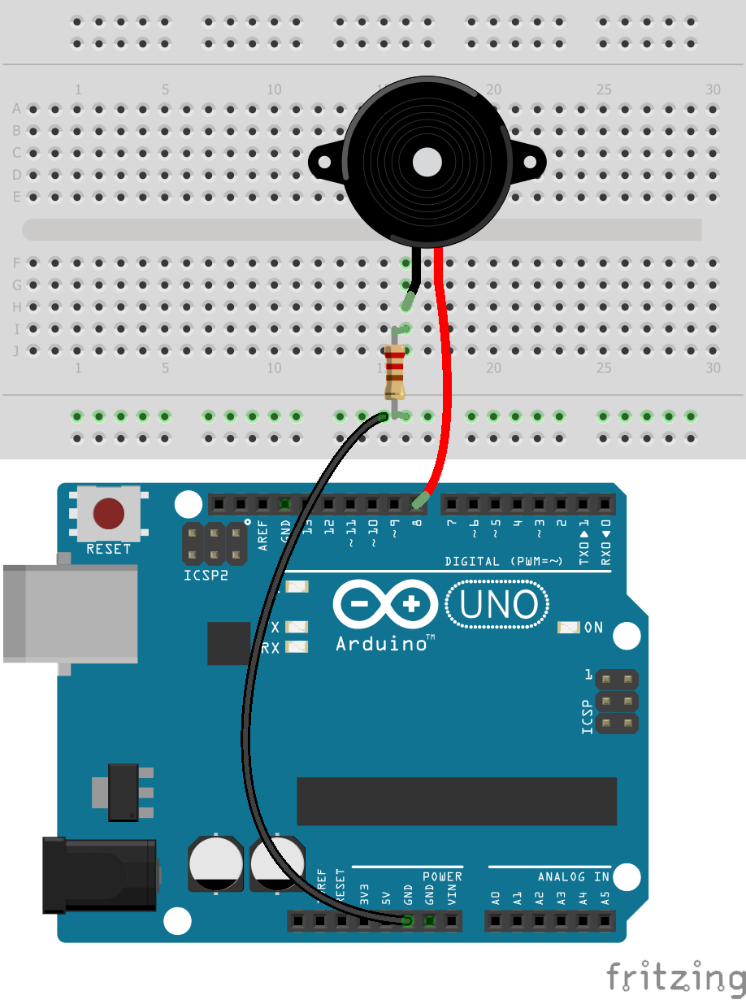

An Arduino is Open-source electronic prototyping platform enabling users to create interactive electronic objects. - Arduino.cc. To get a better understanding about what's possible to use as an intput or output device, me and my fellow student where able to learn the basics of prototyping with an Arduino with multiple sensors, lights, resistors, wires and other small electronics. To summeries what I have learned from these workshops, I put a few of the assignments on this page.
Assignments
Here is a summary of the assignments I did during the workshops.
BLINK MULTIPLE LEDS
The first excercise was to make a led on the arduio board blink. After that it was time to hook up the breadboard to the Arduino and let the LED from our starterpack burn on it's own. The perticular excercise I want to showcase here is the one where we needed to make 2 LEDs blink at the same time but on twice as fast as the other. You can see the code used and the circuit layout below. To see the result you must click on the film icon.
A lot more is possible than to just put a LED on and off. With the analog write function you can make the LEDs fade in and out. In this example the objective was to make the green LED fade in while the yellow LED fades out.
It's also possible to control the LEDs with a potentiometer. By putting a current through the potmeter and connecting it to the Arduino we can read its value. Then it's posible to use this value to control the LED.
A Light-Dependent Resistor or LDR is, as the name suggestes, a resistor that has it's resistance depending on the amount of light it;s resieving. So in complete darkness the LDR's resistance is about 5,000,000ohm or 5megohm and with a very bright light shining on it it's about 200ohm. By mapping the output of this sensor we can control the LED.
This excercise used the same code as the previous one. The only difference to the breadboard is that a resistor was replaced with another LDR. In this assignment we needed to explain what happens when the resisor is replaced.
Another intresting assignment we had to do was this one. By connecting the Arduino to my computer I was able to write a small program that used the potmeter to control a shape on my screen. I used a program called processing and used is to make a rectangle jump around and change color from blue to red and back by turning the potmeter physically.
Now it was time for some jams. With the buzzer connected to the arduino I was able to create some tunes. The tone function was used to set the speakerpin, the amount of Hz and the duration. Unfortunatly I lost the origenal code I used when I was recording the video but it was something like the one below.

int speakerPin = 8;void setup() { pinMode(speakerPin, OUTPUT);}void loop() { for (int i = 0; i < 8; i ++) { tone(speakerPin, 1046, 100); delay(1000); } for (int i = 0; i < 12; i ++) { tone(speakerPin, 1046, 100); delay(500); } for (int i = 0; i < 12; i ++) { tone(speakerPin, 1046, 100); delay(250); } for (int i = 0; i < 12; i ++) { tone(speakerPin, 1046, 100); delay(125); } for (int i = 1046; i > 200; i--){ tone(speakerPin, i); delay(10); } tone(speakerPin, 3000); delay(8000);}